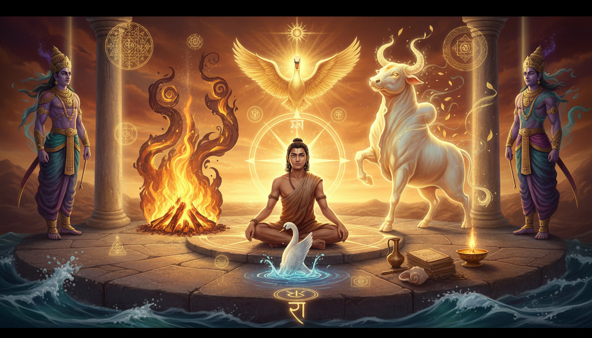

1. The boy who told the truth before he knew anything
Start with the strangest thing about Satyakama Jabala, because it is the part almost nobody tells you, and it is the whole key to what follows.

He was not born into a lineage. He was a boy who asked his mother where he came from, and she had to say: I do not know. She had moved from place to place in her youth, attending on different people in their service, and she never learned who his father was. So she gave him the only name she could: Satyakama Jabala — "Jabala" as her family name, and "Satyakama" because he wanted the truth. As the Upanishad puts it, she told him that in this world, all that she has is him, and he is all that he has. So you shall be called Satyakama Jabala.
Then he did the thing that made the story worth telling down to the present day. He walked to a teacher — Haridrumata Gautama — asked permission to live in his school as a brahmachari, and when the teacher asked him the standard first question, what family do you come from, he told the truth again. The record of the Upanishad is blunt about the teacher's reaction: the boy's honesty is the mark of a brahmaṇa, a true seeker of the knowledge of Brahman. Not the birth. The honesty.
Notice what this establishes before a single remedy is said. In this tradition, the qualification for the knowledge is not ancestry — it is the refusal to hide. And the boy's very name is a declaration of intent: Satyakama. The one who wants the truth. The teacher renamed him Patan, and a Vedic school and the Jabala Upanishad — a treatise on sannyasa, the life of the renouncer — carry his name. His student was Upakosala Kamalayana.
The boy was then sent away to tend four hundred cows, and told to return when they had multiplied to a thousand. That is the whole assignment. No list of texts, no qualifications, no lineage certificate. Four hundred animals, and the number one thousand.
2. What the four teachers actually were
When the cows had multiplied to a thousand, Satyakama went back and asked his teacher the remaining questions. And the answers came from four voices that no one would have put on a syllabus.
The Upanishad records his conversations with a bull, a fire, a swan (hamsa), and a diving bird (madgu). They are not decorative animals. Each one is a power: the bull is Vayu (the wind), the fire is Agni, the swan is Aditya (the sun), and the diving bird is Prana — the vital breath itself. The bird that dives and comes back up is the emblem of the breath that goes down into the body and returns.
And from these four, Satyakama learned that the forms of Brahman are present in all four cardinal directions (north, south, east, west), in the world-bodies (earth, atmosphere, sky, ocean), in the sources of light (fire, sun, moon, lightning), and in man himself (breath, eye, ear, mind).
That last set is the one that matters for remedial work. The four teachers do not teach him about distant gods. They teach him that the same four powers that hold the compass are the ones inside your chest and behind your eyes. Wind, fire, sun, breath — one set of four, running through the sky and through the body at the same time.
This is the whole achievement: Satyakama learned the direction-system of the cosmos from the four beings that were already around him, and learned that it was the same system inside him. He did not go somewhere to get it. He tended animals, and the animals taught him.
3. The four watchers, and what each one rules
Now the part that has direct, practical consequence for anyone doing remedial work.
In the Vedic scheme Satyakama received, the four cardinal directions are not empty space. Each has a watcher — a deity that holds that quarter and begets from it. The system that grew out of this is the dikpala system: the guardians of the directions, called the lokapalas in Hinduism for the cardinal four, and the ashta-dikpala (eight) when the intermediate quarters are added, with Brahma at the zenith in the centre. The intermediate quarters have their own names and their own guardians:
- Northeast — Isana
- Southeast — Agni
- Northwest — Vayu
- Southwest — Nirrti
- Zenith — Brahma (urdhva), Nadir — Adhah
And in the cardinal scheme, the great four are the ones that carry the ritual weight: Yama as the guardian of the south, with Varuna, Kubera and Indra ranged around him under Brahma at the centre. Yama — the god of death and justice, also called Kala (time) and Dharmaraja (lord of dharma), the first mortal who died and therefore the ruler of the departed, the judge who assigns souls to the realm of the Pitris, to Naraka, or back to the earth — is a direction guardian. And Vayu, who taught the lesson through the bull, is the Dikpala Vayu, the northwest guardian, whose weapon in that office is the goad.
Read that list again against the four teachers and the symmetry becomes exact. Yama holds the south. Agni holds the southeast. Vayu holds the northwest. These are not metaphors floating free of the ritual system — they are the roster of the guardians you face when you sit down to pray.
4. Why this is the Vedic root of dig bala
Here is where this stops being a story and becomes a method, and this is why Satyakama's education is worth an article in a remedial astrology app rather than a piece of religious history.
In classical Jyotisha, dig bala — directional strength — is the principle that a planet gains power from the direction it rules, and loses power in the direction it does not. The standard scheme assigns the planets' directional strengths to the cardinal quarters, with Sun and Mars strong in the south, Moon and Venus in the east, Jupiter and Mercury in the north, Saturn in the west, and it works by placing the planet in one of the four angles — the first, fourth, seventh or tenth house from the ascendant.
That grid has exactly the shape of Satyakāma's four-watchers: four cardinal directions, each with a power that rules it, each power begetting a further element from its own quarter. The remedy logic that follows is straightforward and genuinely usable:
To strengthen a planet, you do not do a rite at large. You do it in that planet's direction, facing that direction, at the hour that planet rules.
That is a ritual with a spatial axis, and it is much less commonly taught than the mantra-and-gem default. Most people performing Shani remedies have never been told which way to face.
5. The working form: how to build the direction into your remedy
Here is the protocol, drawn straight out of the story so that it is actually actionable.
The working form: the direction is the prescription. Before you recite a single mantra, write down the planet that is actually causing your problem — the graha that is debilitated, afflicted, or running the transit that is squeezing you. Then write down the direction that graha rules. Do the rite facing that direction, and if the rite involves an offering, place the offering in that quarter of the space you are working in. Not the direction that "feels" right. The direction of the planet that is in trouble. The direction that the deity who is that planet's guardian holds.
The working form: the four quarters and their holders. South is Yama, and Yama is Kala — time — and Dharmaraja, the lord of dharma and the judge of the dead. Southeast is Agni, the fire. Northwest is Vayu, the wind, with the goad. Northeast is Isana, the northeast. When Saturn's window is the problem, note that Saturn is the western planet, and the western quarter is also the one held in the Yama–Varuna–Kubera–Indra roster around Brahma. Yama holds the south in that same roster. So the two directions that carry death-and-time and the ones that carry the wealth and the war sit at the two ends of the same axis, and Saturn — the karaka for hard work, discipline, old age and authority — is the graha that most needs the work done in a fixed direction. Pick a fixed direction for a fixed planet and keep it for the whole window. A remedy that changes its facing every week is a remedy with no axis.
The working form: the teacher, not the lineage. Satyakama's qualification was established by his answer to a single question about who he was, and the answer was the truth. In practical remedial terms: the tradition does not ask you to prove your ancestry to be helped. It asks you to say what is actually the case. Write down the real condition of the thing you are trying to fix — not the version you would like to present — and let that be the basis of the rite. This is the oldest documented instance of a principle that every good remedy depends on: the diagnosis must be honest or the dose is wrong. A remedy built on a flattering diagnosis treats the wrong planet, and no amount of japa in the right direction fixes a planet you were not actually treating.
The working form: four hundred and one thousand. His assignment was four hundred cows, and the return condition was a thousand. That is a structure, not a metaphor: the tradition asks you to begin with a countable, bounded thing and to continue until a larger countable thing is achieved. Do the same with the remedy. Set the count before you start. If Saturn has entered the sign before your Moon, the Sade Sati window is seven and a half years, and Saturn spends roughly two and a half years in each sign. So the count is already given to you: this sign, this length. You do not need to invent the discipline. You need to accept the count that the transit has already assigned. Tending four hundred and returning with a thousand is the shape; the transit supplies the numbers.
The working form: the bird that dives. The last of the four teachers was the diving bird — the emblem of Prana, which goes down and comes back up. The tradition's own image for the breath is a bird that can submerge and return, and that is the physiology of the remedy: it goes down into the dark (the afflicted house, the feared transit, the condition you will not talk about) and it comes back up with something. What you are not willing to submerge into is the part you will not get back. So: one thing, one direction, one count, one dive per cycle of the planet's own period. The bird does not hover. It commits.
The working form: the four teachers, as a sequence. Do not treat the four as one rite. Wind first, fire second, sun third, breath last — that is the order the Upanishad gives them, and it is a workable order for a remedy sequence: begin with movement (Vayu — the wind, and the goad that drives the cattle and the reader), then heat (Agni — the fire, and the lamp or the havan that carries the offering), then light (Aditya — the sun, the visibility that lets you see the thing being worked on), and end with breath (Prana — the diving bird, the inner turn where the actual change happens). Most people do it in reverse, starting with the deity they like and ending with the fire. The order in the text is the order that works.
The working form: the honest name. Satyakama's name was given by his mother because he did not know his father's, and he made it into a statement of purpose rather than a wound. There is a version of this in remedial practice: you cannot fix the chart, but you can name the condition accurately and keep that name. Say the thing as it is. The boy who said I do not know where I come from was accepted into the school of the truth on the spot. The remedy begins at the same doorway.
6. The grave that is also a direction
One more piece of the puzzle, because it is what makes the southern quarter matter and it is easy to miss.
Yama holds the south, and Yama is the one who was the first mortal to die and who, having seen the way to the celestial abodes, became the ruler of the departed. He is the twin of Yami, the son of Surya (in earlier traditions Vivasvat) and Saranyu, the brother of Manu and the step-brother of Shani — Yama and Shani share a solar father and a step-relationship that explains a great deal about how the two are worked with together. In the Rigveda he is closely associated with Agni, his appearances cluster in the first and tenth books, and his Puranic form is described with four arms, protruding fangs, the complexion of storm clouds, a garland of flames, holding a noose and a mace or sword, riding a water-buffalo, with his wife Dhumorna on the left haunch.
He is also a Lokapala — the guardian of the south — and in the tradition's own reckoning he is bound to the ancestors with a specificity: in the Rigveda, Yama declares of himself, "Of departed ancestors I am Aryamā; and among the dispensers of law I am Yama, lord of death." Three hymns (10, 14, and 35) of the tenth book are addressed to him. And his recorded mantras are specific enough to recite:
Oṃ sūryaputrāya vidmahe Mahākālāya dhīmahi Tanno yama pracodayāt
Oṃ Vaivasvadaya vidmahe Daṇḍahastaya dhīmahi Tanno Yama pracodayāt
The first is the Mahākāla form — the great time, the devourer — and it names him as sūryaputra, son of the Sun, which is exactly the lineage claim. The second is the older Vedic form, Vaivasvadaya, with the daṇḍa-hasta, the one who holds the staff. Note also that his assigned planet is Pluto, and his weapon is the staff, the noose and the mace.
Read the implication for remedial work: the south is the direction of time, of judgement, and of the ancestors. When you are doing a remedy for Shani — for the seven and a half years, for the slow transit, for the pressure of an old and unforgiving planet — the tradition places the corresponding directional guardian in the south. And the ancestors are not a sentimental category here; they have a direction, a mantra, and an offering.
7. The offering that has a direction
An offering that is placed without a direction is an offering that is placed nowhere.
The Vedic calendar was built for exactly this purpose: the year was a 360-day solar year of twelve 30-day months, and it "arose from a ritual need to identify the exact nights of the new moon (amavasya) and full moon (puranmasi) for sacred sacrifices, which were otherwise difficult to determine by naked eye observation." The priests tracked the moon's night-by-night movement against the fixed stars, establishing a system of 28 nakshatras — the lunar stations for the 28 nights the moon was visible during a synodic month. The nakshatras are the daughters of Daksha and the wives of Chandra, and in the equal-division system of later Jyotisha each of the 27 nakshatras spans 13° 20' of the ecliptic and is divided into four padas.
That is the whole apparatus of directed ritual: a fixed year, a moon tracked night by night, twenty-seven stations each cut into four parts, and a system of deities who hold the quarters. The shraddha is the offering made to the ancestors, and the asvamedha is the horse-sacrifice that carries the offering power furthest of all — the one rite in the tradition built to be sent out into a direction and arrive.
The working form of all of this, for an app user, is small and repeatable:
- Name the graha. Not your life in general. The planet.
- Name the direction that graha holds.
- Name the nakshatra the moon is in. It gives you the padas to work in, and the deities of those quarters.
- Place the offering in the correct quarter, face that way, and do it on the day that graha rules.
- Count it. A bounded number, repeated on the same count, in the same direction, across the transit window.
8. What the practice is, and what it is not
To be plain about the boundary. This is a ritual and astrological tradition. It is not a substitute for medical, psychological, or legal advice, and the Sade Sati literature itself says the period is not as damaging as folk astrologers claim — that many people achieve great success during the Sade Sati period, and that Jawaharlal Nehru, Donald Trump and Narendra Modi all became head of states during one. Read the transit as a description of pressure and a demand for work, not a forecast of ruin.
What the Satyakama story actually gives you is narrower and more useful than a promise. It gives you:
- A method with an axis. Direction is a variable most remedies ignore. Give the rite a facing and a quarter and it becomes a discipline instead of an atmosphere.
- An honest gate. The qualification for the knowledge was the truth of the boy's answer about his own birth. The qualification for a correct remedy is an honest diagnosis.
- A countable practice. Four hundred, then a thousand. The transit supplies the count; your job is to keep to it.
- An order. Wind, fire, sun, breath. Movement, heat, light, then the dive.
9. What the four teachers left behind
Satyakama Jabala is not remembered for a miracle. He is remembered because he went out to tend four hundred cows and came back having been taught by a bull, a fire, a swan and a diving bird, and because the answer he brought home was that the same four powers that hold the compass are the ones in the breath, the eye, the ear and the mind.
That is a claim about alignment rather than power. It says the world is not one thing and you another; it says the direction you face when you pray is not a gesture but a coordinate, and that the right coordinate for a given affliction is knowable, because the tradition that produced the prayer also produced the roster of the quarters.
So the next time a transit opens and the remedies start, there is one more question to ask, and it is the question Satyakama's teacher asked him: not which planet do I fear, but which direction is it in, and am I facing it.
Sources
5. Yama (Hinduism) - Wikipedia)
16. Kama (Hinduism) - Wikipedia)
- Satyakāma Jābāla - Wikipedia
- Chandogya Upanishad - Wikipedia
- Prashna Upanishad - Wikipedia
- Brihadaranyaka Upanishad - Wikipedia
- Dikpala - Wikipedia
- Vayu - Wikipedia
- Nakshatra - Wikipedia
- Sade Sati - Wikipedia
- Jyotisha - Wikipedia
- Asvamedha - Wikipedia
- Shraddha - Wikipedia
- Pitr - Wikipedia
- Prashna - Wikipedia
- Ketu - Wikipedia
- Revati - Wikipedia
- Shani - Wikipedia
- Hindu astrology - Wikipedia